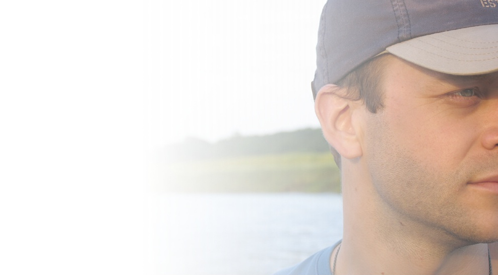

En personlig beretning, der begynder i 2004
Min historie

Hosten...
Konfrontationen...
Udfordringerne...
Kræften...
En dagbog om hverdagen med testikelkræft...
Tim Stollery
Før diagnosen
Jeg hedder Tim Stollery. I december 2004 fik jeg konstateret testikelkræft i stadium IIIb. Jeg begyndte denne dagbog for at holde venner og familie orienteret. Den blev en måde at fortælle, hvordan livet med kræft egentlig var.

Fra min dagbog, juni 2005
»Min hjemmeside lever videre, ligesom jeg.«
Jeg skrev denne beretning, mens det skete. Ordene, bekymringerne og lettelsens øjeblikke er en del af historien.
Læs indlægget fra juni
Der er et liv omkring enhver diagnose.
Familie, venner, medpatienter, en Mac, der sjældent var langt væk, og dem, der hjalp mig igennem. Her er mere end lægejournaler.
Hvorfor jeg har ladet dette blive her
Jeg skrev denne dagbog og oprettede denne hjemmeside i 2004, først med Flash. Senere omarbejdede jeg den i Apples iWeb-program, da det blev udgivet, selvom iWeb for længst er blevet forældet. Formålet med hjemmesiden var at holde familie og venner orienteret, mens jeg blev behandlet for testikelkræft i stadium IIIb - ét samlet sted for dem, der gerne ville vide, hvordan jeg havde det, og hvordan behandlingen skred frem - så jeg havde mere tid til at koncentrere mig om at blive rask.
I mange år har denne hjemmeside været tilgængelig på mit domæne timstollery.com, men et domænenavn skal fornys, og en hjemmeside skal vedligeholdes. Jeg kan ikke vide, om nogen vil fortsætte med at tage sig af nogen af delene, når jeg ikke længere selv kan, og jeg er helt sikker på, at internettet overlever mig!
Derfor har jeg valgt at bevare og hoste min historie her på GitHub, så den også er tilgængelig på https://timstollery.github.io, i håb om at den fortsat vil kunne læses, selvom domænet timstollery.com en dag forsvinder. Jeg har også arkiveret den, hvor jeg kan.
Gennem årene har selve hjemmesiden også udviklet sig meget. Det, der begyndte som en ret enkel måde at holde familie og venner orienteret på, er gradvist blevet langt mere tilgængeligt. Jeg har redesignet siden, så den fungerer på forskellige enheder, tilføjet funktioner, der gør den lettere at læse og finde rundt på, og fået min beretning oversat til stadig flere sprog. Jeg håber, at disse forbedringer vil gøre det muligt for flere mennesker, uanset hvor i verden de befinder sig, og hvilke behov de har, at læse min historie og måske finde noget nyttigt i den.
Hvis denne dagbogshjemmeside hjælper nogen med at genkende et symptom, forstå hvordan behandling kan være, eller føle sig mindre alene med en diagnose, har det været umagen værd at bevare den her.
De allerbedste ønsker, Tim Stollery.